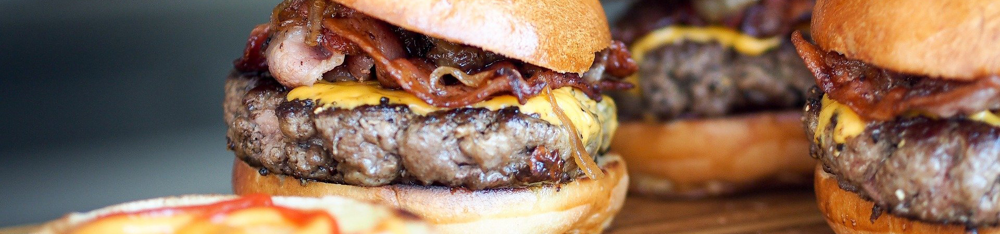
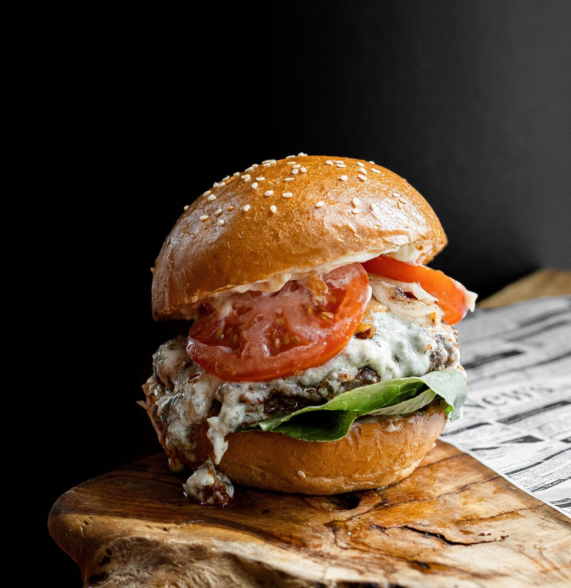
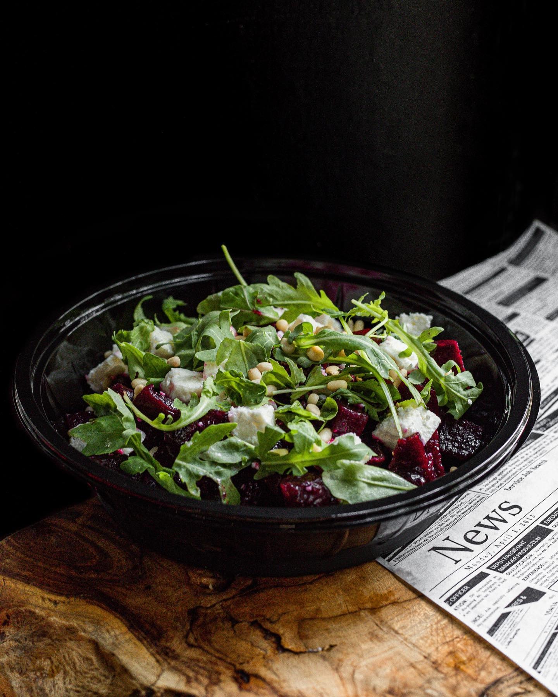
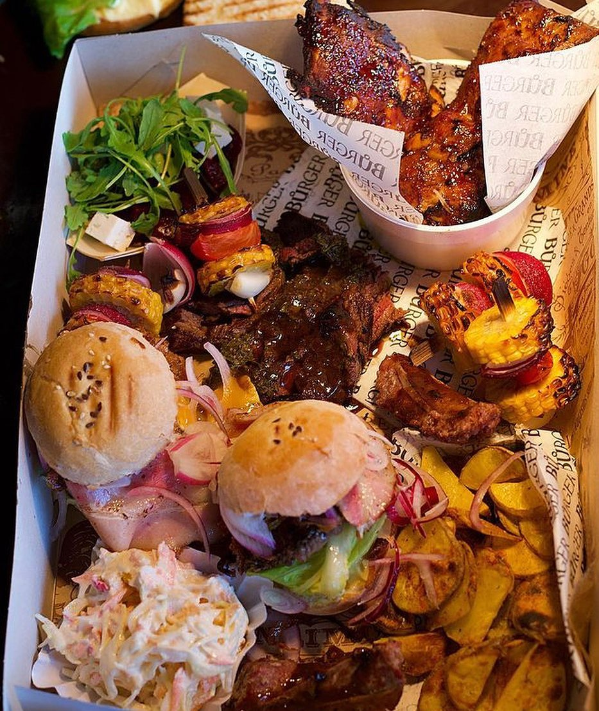
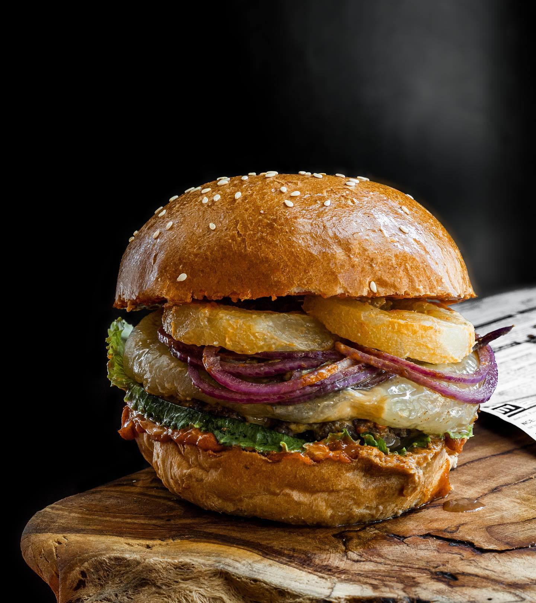
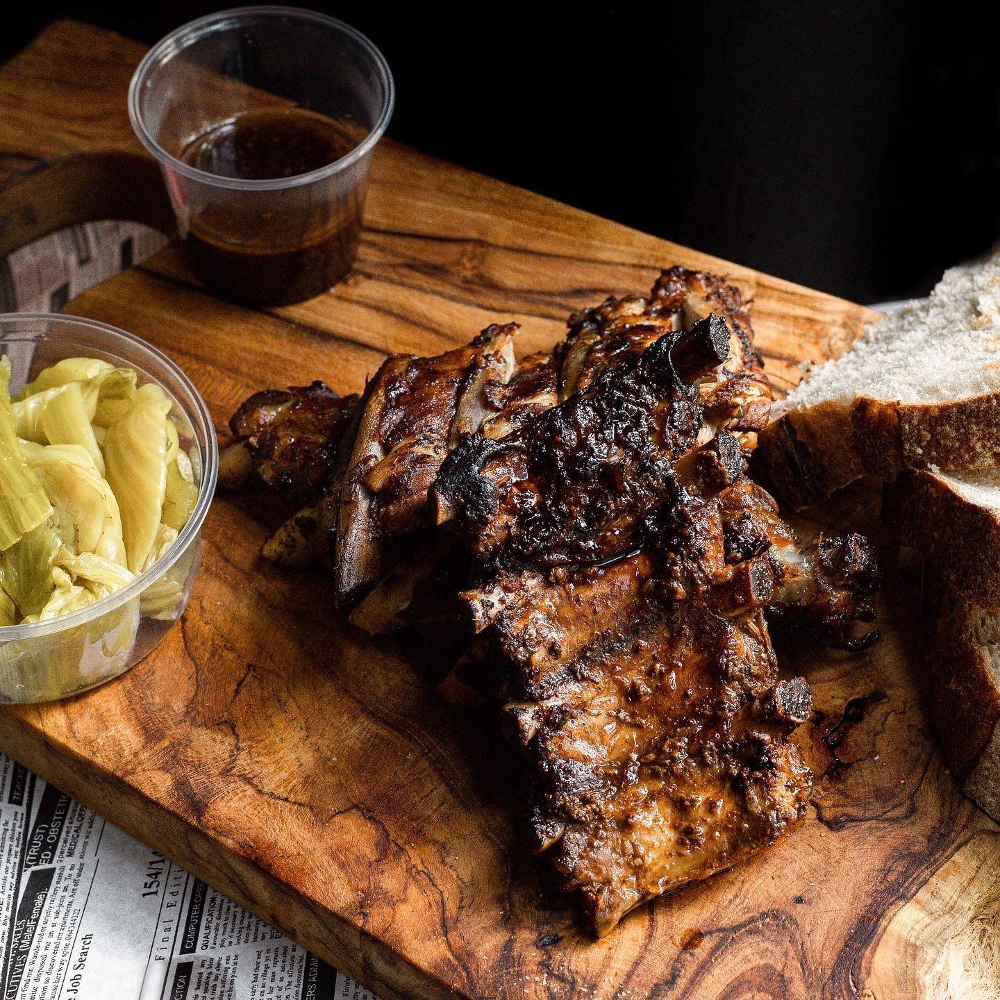
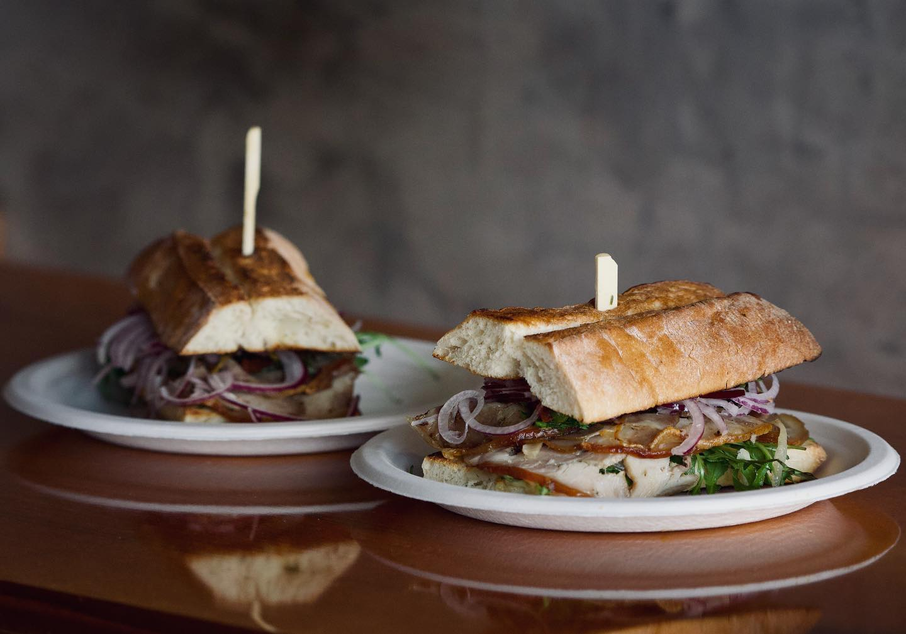

Rádi pro vás připravíme burgery z hovězího Angus nebo jehněčího masa. Umíme i vegetariánské a bezlepkové. Mimo to si u nás pochutnáte i na salátech, bruschettách a dalších specialitách. Bulky si připravujeme sami z naší vlastní pece.






Najdete nás v centru Zlína hned vedle Komenského parku